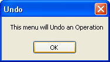
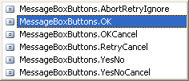
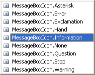
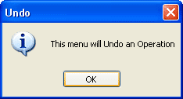

Free
computer Tutorials
|
Free
computer Tutorials
|
|
 home home |
Stay
at Home and Learn
|
||||||
The Message Box in VB .NET |
|||||||
|
The message box function you have used so far is the old message box function. It is the one left over form VB6: MsgBox("Your Message Here")
MessageBox.Show("Your Message Here") So you type the word "MessageBox" then a full stop. Double click the "Show" method on the menu the appears. Then type a round bracket. You should get a rather long and complex tool tip appearing. In fact, it's too long to even fit on this page! Click here to see the Message Box Options tooltip (needs Javascript enabled) What it all means is there are options you can use with your message box. The first one is "text As String". The text in question is the text that will appear for your message - the message itself, in other words. The next one is "caption As String". This sets the white caption at the top of the message box. So if your message box function was this: MessageBox.Show("This menu will Undo an Operation", "Undo") You would get this message box popping up:  Each option for your message box is separated by a comma. If you type a comma after the "Undo" in the code above, you'll get another pop-up menu. On this menu, you can specify which buttons you want on your message box:  If you only need the OK button on your message boxes, then double click this item, then type a comma. Yet another pop-up menu will appear. On this menu, you can specify the symbol that appear in the message box:  It's up to you which symbol you choose. Experiment with all of them and see what they look like. In the image below, we've gone for the Information symbol:  Compare the message box above with the one we had earlier: In a real programme, you should use the new MessageBox.Show( ) function, rather than the MsgBox() we used (and will again because it saves on typing and space!) In the next section, we'll move on to Conditional Logic Click here to explore Conditional Logic in VB .NET --> <--Back to the .NET Contents Page View all our Home Study Computer Courses
|